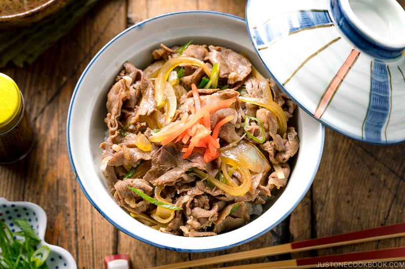

Back to menu list...
Gyuudon
Serves one.

Source: Just One Cookbook
Description
It's beef cooked in a sauce on top of rice with some onions. It's good for you.
Ingredients
- onion(s)
- green onion(s)
- 200g beef
Sauce
- ½ cup dashi (glorious Japanese soup stock folded over one thousand times)
- 2 Tbsp sake (do not substitute with inferior western or Chinese cooking wine)
- 2 Tbsp mirin
- 3 Tbsp soy sauce
- 1 Tbsp sugar
Serving
- short-grain rice
- optional garnish such as pickled ginger or sesame seeds or skittles
Method
Prepare
- Begin cooking the rice using whichever method you prefer (the correct method is with a rice cooker).
- Thinly slice the onion(s).
- Aesthetically slice the green onion(s).
- Thinly slice the beef. Like, exceptionally thin.
Cook
- In a pan, combine the liquid ingredients with the sugar and turn the heat on "high".
- Add the onions.
- Add the beef. We're getting crazy now.
- Cover the pan with a lid and bring the heat down to "medium".
- Once the beef has browned, skim off the fat from the broth and continue cooking at a gentle simmer for a few minutes.
- Add the green onions and continute cooking for another minute.
Serve
- Add cooked rice to a bowl. Required amount of rice will depend on how fat/hungry you are.
- Add beef and onion mixture atop the rice. Atop.
- Add garnish of your choosing. Or don't. See if I care (I won't).
Eat
- Place appropriately sized portion of bowl contents into your mouth, chew and swallow.
- Repeat until bowl is empty.